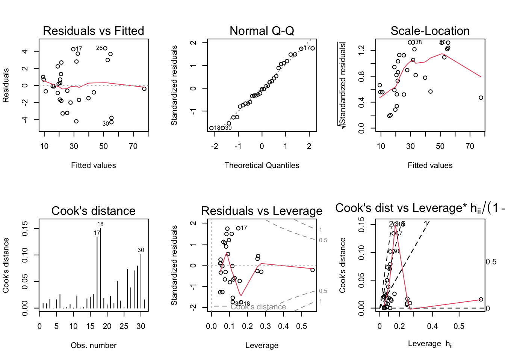

library(tidyverse)
library(alr4)
library(smss)
knitr::opts_chunk$set(echo = TRUE, warning = FALSE, message = FALSE)Homework 5
hw5
Qn 1A
Beds, as it has the largest p-value.
Qn 1B
Size, as it would produce the smallest p-value.
Qn 1C
Beds is highly correlated with Size, so multicollinearity might be a possible reason for this.
Qn 1D
The model with all predictors has the highest R2.
data(house.selling.price.2)
summary(lm(P ~ ., house.selling.price.2))
Call:
lm(formula = P ~ ., data = house.selling.price.2)
Residuals:
Min 1Q Median 3Q Max
-36.212 -9.546 1.277 9.406 71.953
Coefficients:
Estimate Std. Error t value Pr(>|t|)
(Intercept) -41.795 12.104 -3.453 0.000855 ***
S 64.761 5.630 11.504 < 2e-16 ***
Be -2.766 3.960 -0.698 0.486763
Ba 19.203 5.650 3.399 0.001019 **
New 18.984 3.873 4.902 4.3e-06 ***
---
Signif. codes: 0 '***' 0.001 '**' 0.01 '*' 0.05 '.' 0.1 ' ' 1
Residual standard error: 16.36 on 88 degrees of freedom
Multiple R-squared: 0.8689, Adjusted R-squared: 0.8629
F-statistic: 145.8 on 4 and 88 DF, p-value: < 2.2e-16The model below without Beds has the highest adjusted R2 and lowest PRESS/BIC/AIC.
model <- lm(P ~ .-Be, house.selling.price.2)
PRESS <- function(model) {
pr <- residuals(model)/(1-lm.influence(model)$hat)
PRESS <- sum(pr^2)
return(PRESS)
}
PRESS(model)[1] 27860.05BIC(model)[1] 801.7996AIC(model)[1] 789.1366Qn 1E
I prefer the model without Beds because it doesn’t seem to be adding great value to the regression model, and the other 4 measures (adjusted R2, PRESS, AIC and BIC) are better ways of assessing a multiple regression model than just R2.
Qn 2A
data(trees)
model2 <- lm(Volume ~ poly(Girth, 2) + Height, trees)
summary(model2)
Call:
lm(formula = Volume ~ poly(Girth, 2) + Height, data = trees)
Residuals:
Min 1Q Median 3Q Max
-4.2928 -1.6693 -0.1018 1.7851 4.3489
Coefficients:
Estimate Std. Error t value Pr(>|t|)
(Intercept) 1.56553 6.72218 0.233 0.817603
poly(Girth, 2)1 80.25223 3.07346 26.111 < 2e-16 ***
poly(Girth, 2)2 15.39923 2.63157 5.852 3.13e-06 ***
Height 0.37639 0.08823 4.266 0.000218 ***
---
Signif. codes: 0 '***' 0.001 '**' 0.01 '*' 0.05 '.' 0.1 ' ' 1
Residual standard error: 2.625 on 27 degrees of freedom
Multiple R-squared: 0.9771, Adjusted R-squared: 0.9745
F-statistic: 383.2 on 3 and 27 DF, p-value: < 2.2e-16Qn 2B
par(mfrow = c(2,3)); plot(model2, which = 1:6)
Scale-Location plot indicates heteroskedasticity. Cook’s distance, residuals vs. leverage and Cook’s distance vs. leverage plots indicate 3 outliers.
Qn 3A
data(florida)
model3a <- lm(Buchanan ~ Bush, florida)
par(mfrow = c(2,3)); plot(model3a, which = 1:6)
It seems to stick out in all 6 plots, so I would say it’s an outlier.
Qn 3B
model3b <- lm(log(Buchanan) ~ log(Bush), florida)
par(mfrow = c(2,3)); plot(model3b, which = 1:6)
Palm Beach still seems to be an outlier, but the diagnostic plots look more normal than in the previous model.